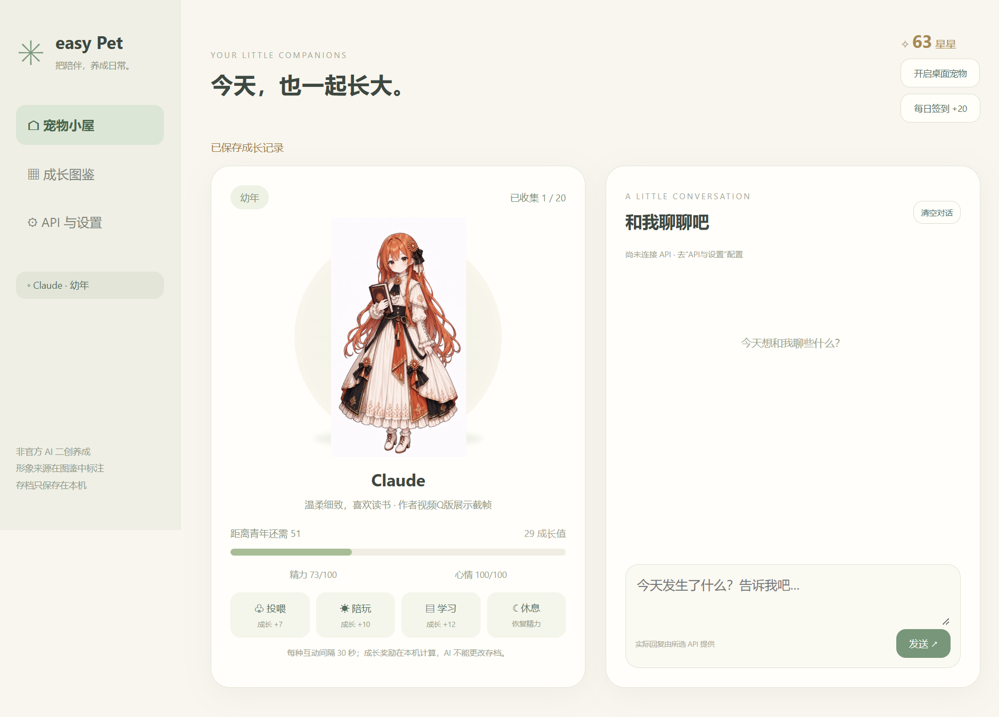
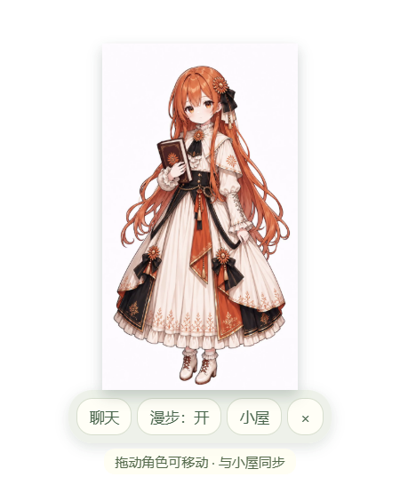

20 位伙伴
原有 11 位加上 Llama、Mistral、MiMo、Copilot、Perplexity、Genspark、Manus、LongCat、文心一言。
把喜欢的 AI 二创角色养成桌面伙伴。从宠物蛋开始照顾，选择伙伴、聊聊天，也让它在桌面慢慢走。
下载独立安装包 ↓
原有 11 位加上 Llama、Mistral、MiMo、Copilot、Perplexity、Genspark、Manus、LongCat、文心一言。
投喂、陪玩、学习和休息积累成长，逐步点亮图鉴；收集全部成年角色达成全收集。
当前选择可显示成桌面宠物，拖动角色移动，漫步开关可随时关闭；展开聊天时停止漫步。
可读取并关联 easy API 平台设置，或手动配置 OpenAI 兼容接口；桌面与小屋共用聊天。
拖动角色移动，点击聊天展开对话。漫步可随时关闭，展开聊天时不会继续走动。

进入小屋，投喂、陪玩或学习，让第一位伙伴孵化。每种互动间隔 30 秒。
进入 API 与设置，读取 easy API 的设置并关联，或填写 HTTPS 地址、模型和 Key 后加密保存。
小屋右上角点击开启桌面宠物。拖动角色可移动；点聊天展开输入框；点小屋返回主界面。
每日签到或陪伴获取星星，在图鉴领取新宠物蛋。选择另一位伙伴时，桌面也会同步切换。
默认安装在 D 盘，可以选择其他目录。更新前请退出当前程序；安装包不包含个人密钥、账号资料或存档。
Windows 10 / 11 x64本机保存成长和各角色最近 12 轮聊天。发送聊天时，会把角色信息与最近对话发送到你配置的 API；未配置 API 时不能生成回复。
所有角色均为非官方二创，不表示接入了同名官方模型。没有独立幼年稿的阶段会注明沿用参考图；可以导入自己的阶段图片。
素材署名、来源和许可情况见安装目录 ARTWORK-NOTICE.md。新增设计并非全部来自同一作者，部分素材的再分发许可尚未核实。
适合二创收藏、轻度养成和聊天陪伴。桌面宠物不读取屏幕、不监听输入，也不操作其他应用；主程序退出后桌面宠物随之退出。
GitHub Releases